2.1.1 BorderContainer
This layout widget provides is designed as an alternative to both SplitPanel and
DockPanel widgets. It is constituted of ContentPanels layed out in Regions, with or
without splitters between the center region and the outer ones.

2.1.1.1 Create the BorderContainer layout
You will need to use to import the following classes :
import com.objetdirect.tatami.client.layout.BorderContainer;
import com.objetdirect.tatami.client.layout.ContentPanel;
Then, all you have to do is to instantiate your BorderContainer, and add
ContentPanel to it. Only ContentPanels can be added to the BorderContainer, so you
will have to wrap your widgets into a ContentPanel:
BorderContainer panel =
new BorderContainer();
panel.setSize("300px","300px");
HTML left =
new HTML("left");
HTML right =
new HTML("right");
HTML top =
new HTML("top");
HTML bottom =
new HTML("bottom");
HTML center =
new HTML("center");
panel.add(
new ContentPanel(left),BorderContainer.REGION_LEFT,
true);
panel.add(
new ContentPanel(right),BorderContainer.REGION_RIGHT,
true);
panel.add(
new ContentPanel(top),BorderContainer.REGION_TOP,
true);
panel.add(
new ContentPanel(bottom),BorderContainer.REGION_BOTTOM,
true);
panel.add(
new ContentPanel(center),BorderContainer.REGION_CENTER);
To add a widget to the border container panel, use one of the following
methods:
public void add(Widget child, String region);
public void add(Widget child, String region,
boolean splitter);
The region argument must be one of the following constants from
BorderContainer:
-
BorderContainer.REGION_CENTER:
- the content will be placed in the
center area
-
BorderContainer.REGION_TOP:
- the content will be placed in the top
area
-
BorderContainer.REGION_BOTTOM:
- the content will be placed in the
bottom area
-
BorderContainer.REGION_LEFT:
- the content will be placed in the left
area
-
BorderContainer.REGION_RIGHT:
- the content will be placed in the
right area
-
BorderContainer.REGION_LEADING:
- same as left except it will be
reversed in a right-to-left environment
-
BorderContainer.REGION_TRAILING:
- same as right except it will be
reversed in a right-to-left environment
The splitter argument determines whether a splitter should be placed between this panel
and the center one. If it is true, then the panel will be resizable. If false, it will not.
The method public void
will act exactly like
2.1.1.2 Options
The border container has mainly two options :
-
liveSplitters:
- indicates whether the panel should be resized while the splitter
is dragged or only when it is released
-
design
- : one of:
- BorderContainer.DESIGN_HEADLINE if the design is HEADLINE
(top and bottom section take the whole width)(defaultValue)
- BorderContainer.DESIGN_SIDEBAR if the design is sidebar (left
and right section will take the whole height)
ex:

2.1.1.3 Examples:
HorizontalSplitPanel
BorderContainer panel =
new BorderContainer();
panel.setSize("300px","300px");
panel.add(
new ContentPanel(
new HTML("LEFT␣SIDE")),BorderContainer.REGION_LEFT,
true);
panel.add(
new ContentPanel(
new HTML("RIGHT␣SIDE")),BorderContainer.REGION_CENTER);

VerticalSplitPanel
BorderContainer panel =
new BorderContainer();
panel.setSize("300px","300px");
panel.add(
new ContentPanel(
new HTML("TOP␣SIDE")),BorderContainer.REGION_TOP,
true);
panel.add(
new ContentPanel(
new HTML("BOTTOM␣SIDE")),BorderContainer.REGION_CENTER);